算法再好，通常也难敌更多的数据．
这个问题来自于磁盘驱动器的发展趋势: 寻址时间的提高速度远远慢于传输速率的提高速度．
Hadoop 源码最重要的几个库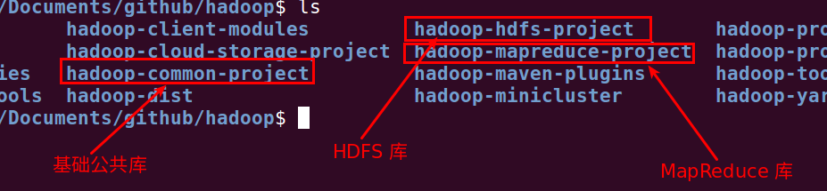
这几个库的系统默认配置文件:
./hadoop-common-project/hadoop-common/src/main/resources/core-default.xml./hadoop-hdfs-project/hadoop-hdfs/src/main/resources/hdfs-default.xml./hadoop-mapreduce-project/hadoop-mapreduce-client/hadoop-mapreduce-client-core/src/main/resources/mapred-default.xml相应的这几个库的重要配置文件:
./hadoop-common-project/hadoop-common/src/main/conf/core-site.xml./hadoop-hdfs-project/hadoop-hdfs/src/main/conf/hdfs-site.xml./hadoop-mapreduce-project/conf/mapred-site.xml相应的最重要的几个脚本:
./hadoop-common-project/hadoop-common/src/main/bin/start-all.sh./hadoop-hdfs-project/hadoop-hdfs/src/main/bin/start-dfs.shAPI 版本兼容问题:
org.apache.hadoop.mapred.* 这个包下面包含旧的对外编程接口和 MapReduce 各个服务实现org.apache.hadoop.mapreduce.* 这个包下面包含新的对外编程接口以及一些新特性自带的例子:
./hadoop-mapreduce-project/hadoop-mapreduce-examples/src/main/java/org/apache/hadoop/examples/WordCount.java配置文件：
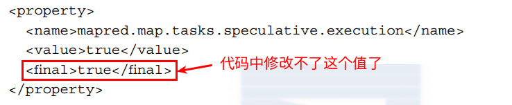
Configuration 一上来会加载这两个类:
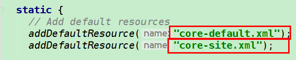
WordCount 运行过程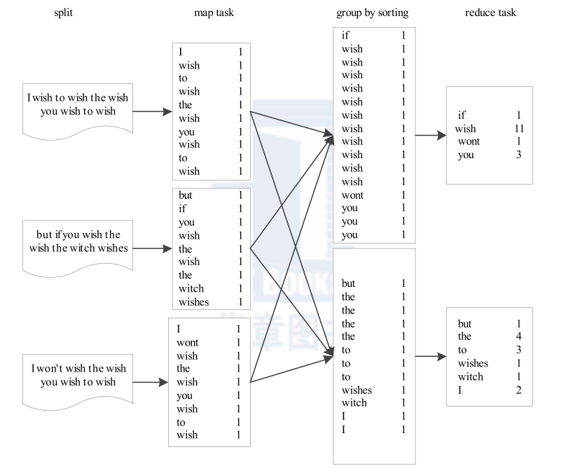
Map Task 从对应的输入分片中解析出一个个的 key/value,并调用 map() 函数处理Reduce Task 个数将结果分成若干个分片 Partition 写到本地磁盘Reduce Task 从每个 Map Task 中读取属于自己的那个 partition,然后用基于排序的方法将 key 相同的数据聚集在一起reduce() 函数处理,并将结果输出到文件中TokenizerMapper:
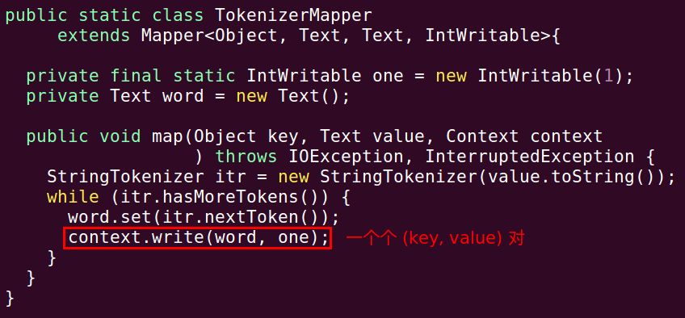
IntSumReducer:
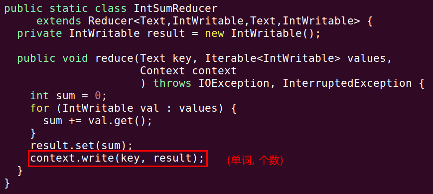
map 的工作方式这些行以键/值对的方式来表示 map 函数:
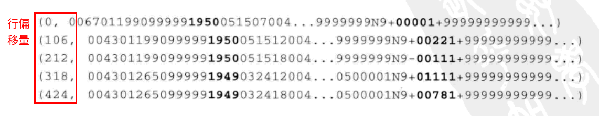
行号会被忽略，map 函数提取年份和气温，并将其作为输出发送:
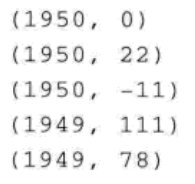
map 函数的输出先由 MapReduce 框架处理，然后再被发送到 reduce 函数．这一处理过程根据键来键/值对进行排序和分组．reduce 函数会看到如下输入:
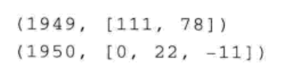
每年的年份都有一系列气温读数，所有 reduce 函数必须重复这个列表并从中找出最大的读数:
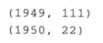
整个逻辑数据流:
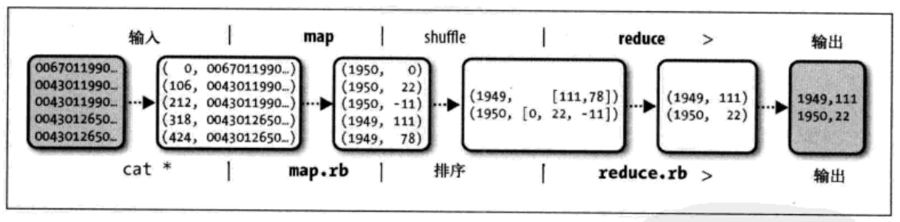
MapReduce 解决的问题任务可以被分解为多个子问题,且这些子问题相对独立,彼此之间不会有牵制. 基于该特点， MapReduce 编程模型给出了其分布式编程方法， 共分 5 个步骤：
MapReduce 将计算过程分解成以上 5 个步骤带来的最大好处是组件化与并行化。
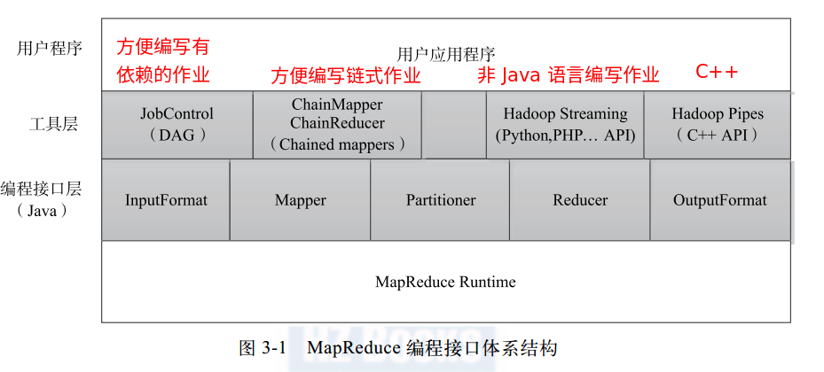
应用范围:
grepURL 访问频率统计Top K 问题K-means 聚类注:
Fibonacci数值计算不能用MapReduce来解决,因为下一个结果依赖于前面的计算结果.
HDFS 架构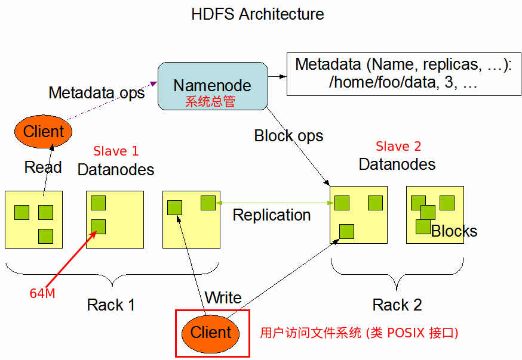
当用户上传一个大的文件到 HDFS 上时， 该文件会被切分成若干个 block， 分别存储到不同的 DataNode； 同时， 为了保证数据可靠， 会将同一个 block 以流水线方式写到若干个（ 默认是 3， 该参数可配置） 不同的 DataNode 上。 这种文件切割后存储的过程是对用户透明的。
MapReduce 架构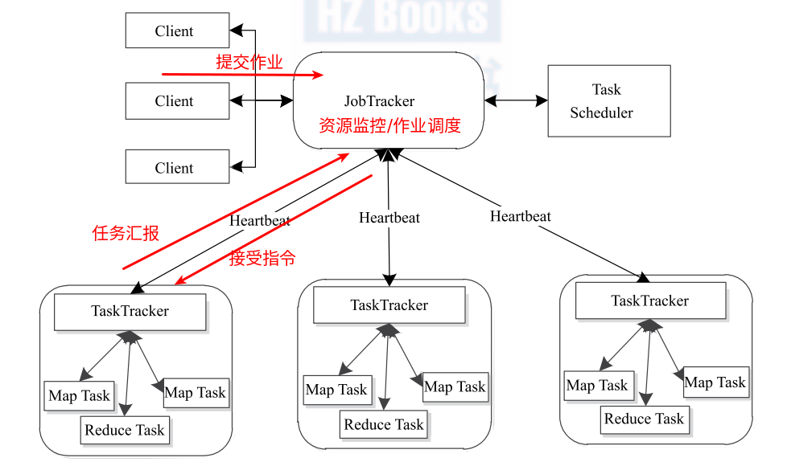
Split 和 Block 的对应关系:
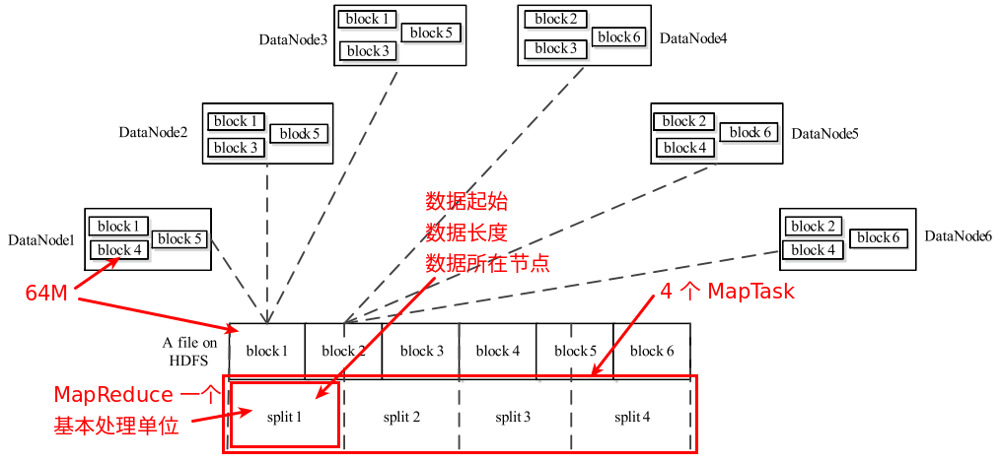
MapTask 执行过程:
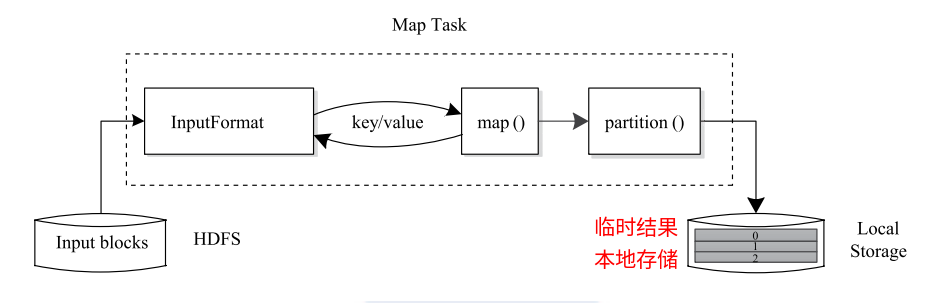
ReduceTask 执行过程:
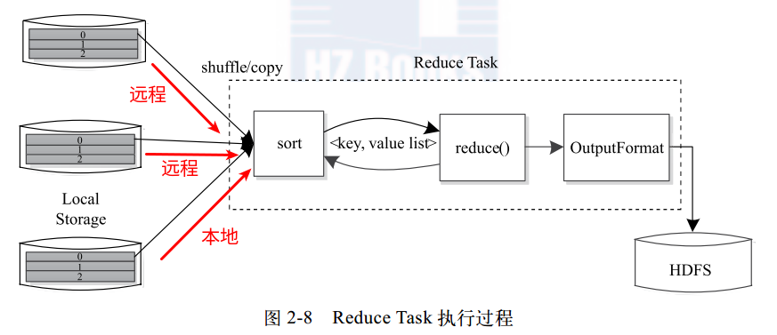
Hadoop MapReduce 作业的生命周期:
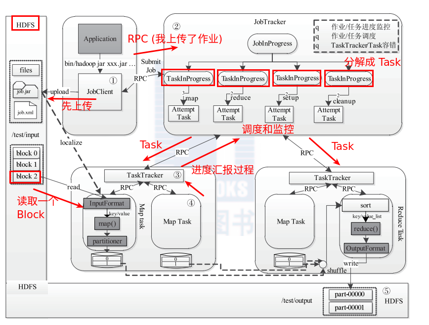
| 字段 | 默认值 | 说明 |
|---|---|---|
mapred.mapper.new-api |
false |
|
mapred.reducer.new-api |
false |
|
yarn.app.mapreduce.client.job.max-retries |
3 |
|
yarn.app.mapreduce.client.job.retry-interval |
2000 |
|
mapreduce.job.reduces |
1 |
the number of reduce tasks for this job |
ClusterYarnClientProtocolProvider 创建 ClientProtocolmapreduce.framework.name 为 yarn,就返回 YARNRunnerLocalJobRunnerLocalJobRunnermapreduce.jobtracker.system.dir 目录 : /tmp/hadoop/mapred/systemstageArea 目录 = /tmp/hadoop/mapred/staging + groupName + randid + /.stagingOutputSpecs:Output 目录不存在jobId = new JobID("local" + randid, ++jobid)submit 目录 = stageArea 目录 + / + jobIdsharedCache 只在 Yarn 平台上才可以使用replication 是 10submit 目录 已经存在于本地的 HDFS 中, 抛出 IOExceptionsubmit 目录 一个 0700 (rwx------) 权限submit 目录Job 分布式缓存文件目录 = submit 目录 + / + filesJob 分布式缓存库目录 = submit 目录 + / + libjarsJob 分布式缓存 archives 目录 = submit 目录 + / + archivesjob.jar 路径 = submit 目录 + / + job.jartmpfiles 文件拷贝到 Job 分布式缓存目录tmpjars 文件拷贝到 Job 分布式缓存库目录tmparchives 文件拷贝到 Job 分布式缓存 archives 目录jobJar 路径拷贝到 job.jar 路劲下面uri 字符串,没有 DNS Lookupsubmit 目录 + / + job.xmlInputFormat 转为 InputSplit[]Path 列表_ 或者 . 开头的文件totalSize / numSplits(1) 得到 map-reduce 任务的 InputFormat 表示:
|
|
(2) 获取 Job 提交的队列的名字,默认 default:
job.xml 文件中Job(3) 查询信息:
NetworkedJob 封装 JobJob 的运行和状态信息Hadoop 启动修改三个配置文件:
(1) $HADOOP/etc/hadoop/mapred-site.xml
|
|
(2) $HADOOP/etc/core-site.xml
|
|
(3) $HADOOP/etc/hdfs-site.xml
|
|
Hadoop 启动/停止脚本时需要通过 SSH 发送命令启动相关守护进程,为了避免每次启动/停止 Hadoop 输入密码进行验证,需要设置免密码登录:拷贝本机的 ./ssh/id_rsa.pub 到 authorized_keys 中.
|
|
启动之后可以使用 $HADOOP/bin/hadoop 来输入命令,完成各种操作,支持的命令请参考: Commands Guide
在 Hadoop MapReduce 中， 序列化的主要作用有两个： 永久存储和进程间通信。在 Hadoop MapReduce 中， 使一个 Java 对象可序列化的方法是让其对应的类实现 Writable 接口。 但对于 key 而言， 由于它是数据排序的关键字， 因此还需要提供比较两个 key 对象的方法。 为此， key 对应类需实现 WritableComparable 接口。
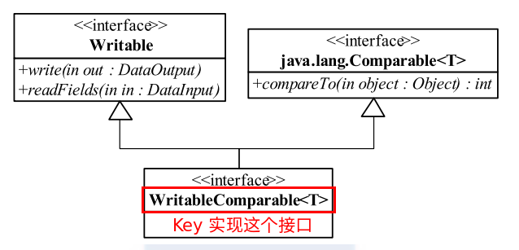
Reporter 是 MapReduce 提供给应用程序的工具。 如图 3-4 所示， 应用程序可使用 Reporter 中的方法报告完成进度（ progress）、 设定状态消息（ setStatus） 以及更新计数器
（ incrCounter）。
InputFormat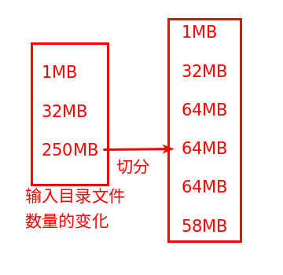